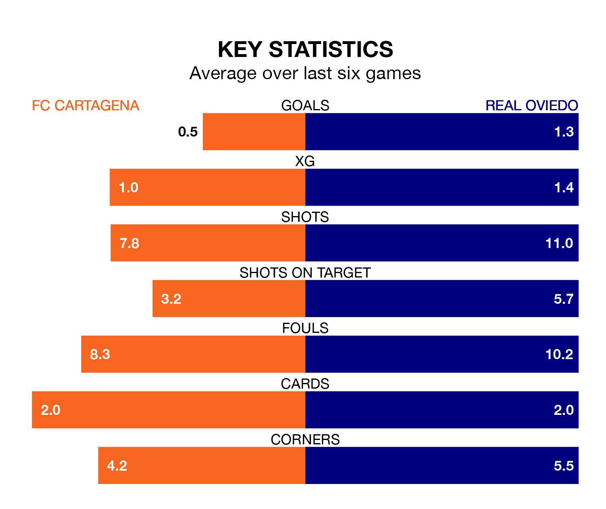

FC Cartagena host Real Oviedo on Monday at the Estadio Municipal Cartagonova in the Segunda División.
In their last league match, on April 13, Cartagena lost to Sporting Gijón 1-0 away.
Oviedo drew, 1-1 at home against Mirandés on April 14, with Jaime Seoane scoring their goals.
With 31 goals in 35 games so far this season, Cartagena are scoring at below the league average rate with 0.9 goals per game. And they are conceding more than average, letting in 45 goals at a rate of 1.3 per game.
Oviedo, meanwhile, are above average scorers, with 1.3 goals per game, compared to a league average of 1.1. They have conceded 0.9 goals per game.
In the last 10 years, Cartagena and Oviedo have played each other on seven occasions. Cartagena won three of them, Oviedo two, and they drew twice.
On average, Cartagena scored 1.3 goals and Oviedo 1.0 in those matches.
Their last meeting was on November 13, when they played out a 1-1 draw.
The visitors are fifth in the table after 35 games, of which they have won 14 and drawn 13, earning 55 points.
The home team are 11 places behind Oviedo in 16th, with 10 wins and nine draws putting them on 39 points.
Oviedo's Santiago Colombatto is among the league's most creative players, racking up eight assists in 30 appearances so far this season, and holding second spot in the Segunda División's assist charts.
For Cartagena, Iván Calero Ruiz, Jairo Izquierdo González and Alfredo Ortuño Martínez have set up the most goals, having laid on three assists apiece to date.
Cartagena are in mixed form in the Segunda División, with two wins and two draws from their last six games.
With three wins and two draws over that period, the away side's form is better – they have taken 11 points from 18, compared to the hosts' eight.
Updated: 11:31 (UTC), 15/04/24